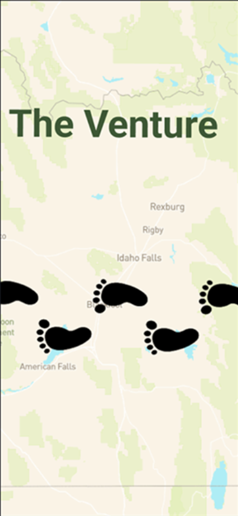
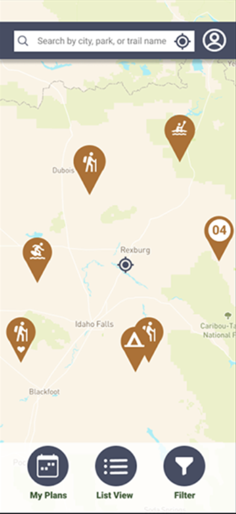
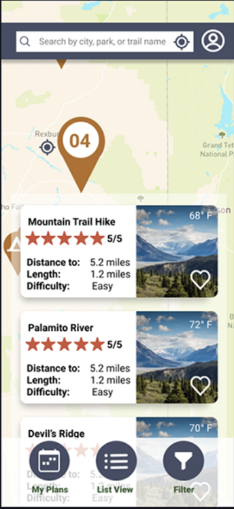
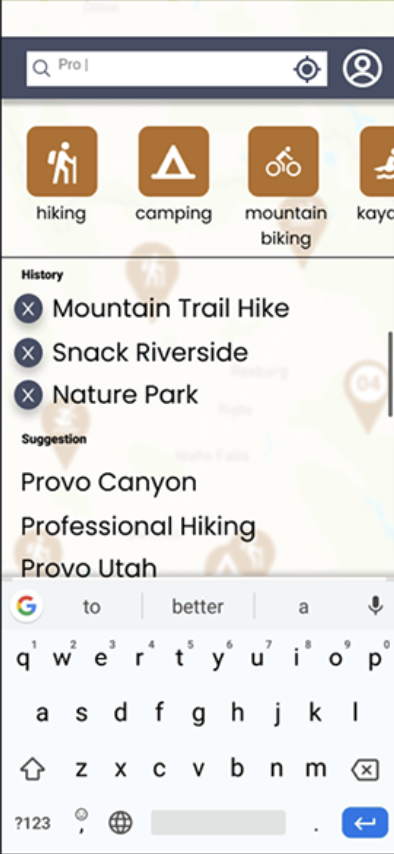
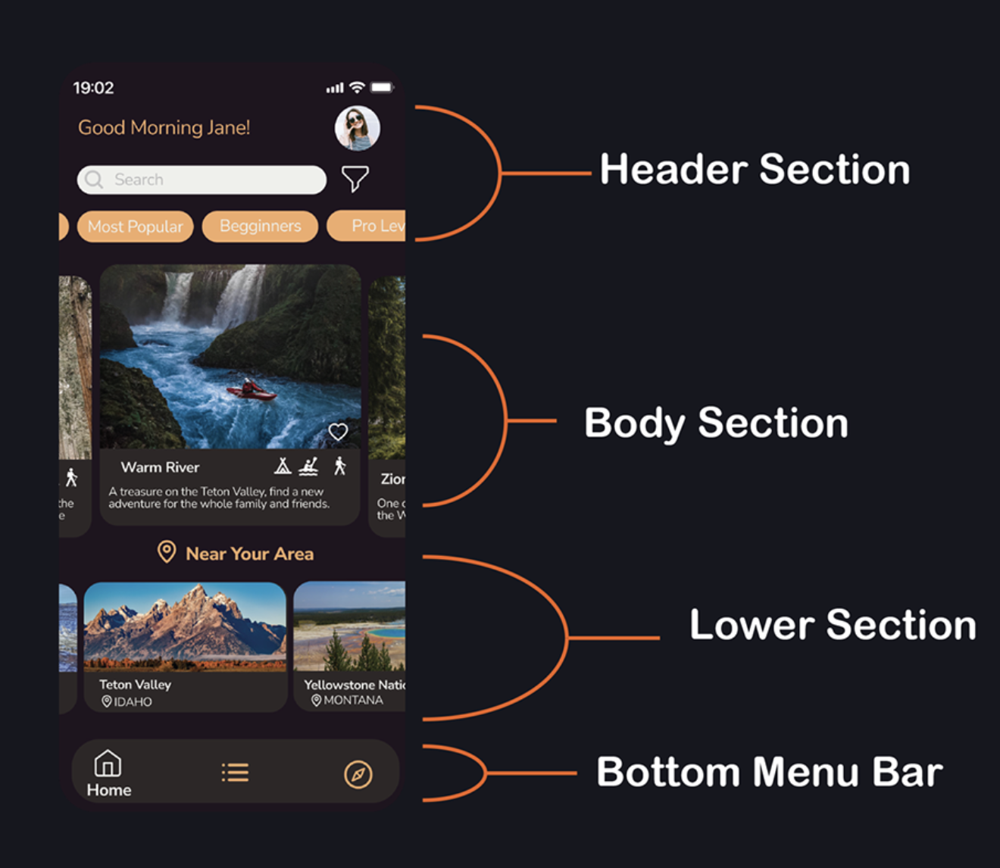

Through the design process, one of the mais decisions was to divide the app in sections as Header, Body, Lower and Navigation. Having in mind that doing so, this would facilitate the development of future new features and elements on the interface. This also helps to harmonize the interface design and creates a more easy to learn curve for the users.
About the Project
This User Interface was primarily developed during the User Interface Design and Development class at Brigham Young University - Idaho.
Below you can find the final design created by the group in class:




More Than Just Another Outdoor Adventure App
The objective of this App is to present a solution for users looking for outdoor activities information nearby. Applying design and usability principles I made key changes on the overall App interface appearance. By doing that I was able to design a more fluid, intuitive and user-friendly application. Which allows the user to easily interact and engage with the App.
